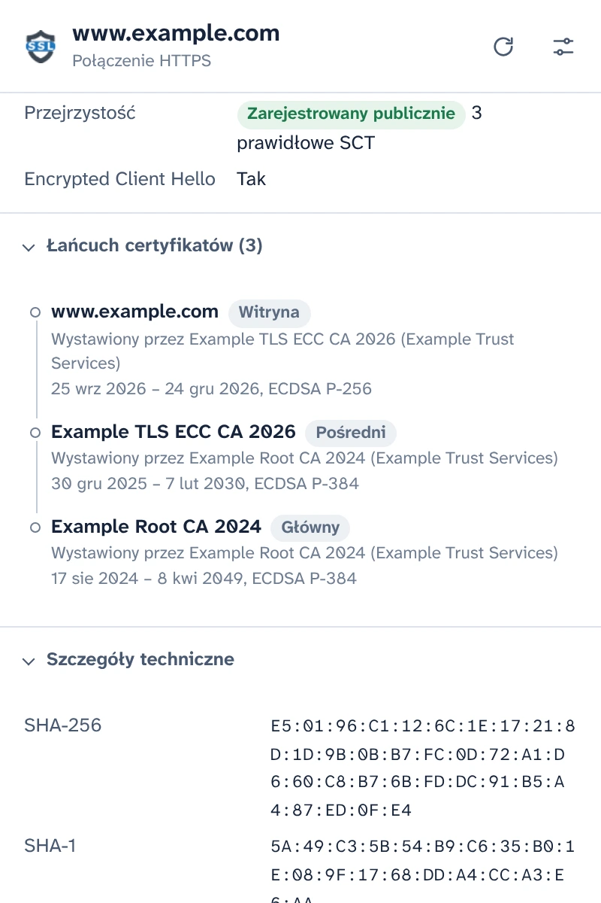
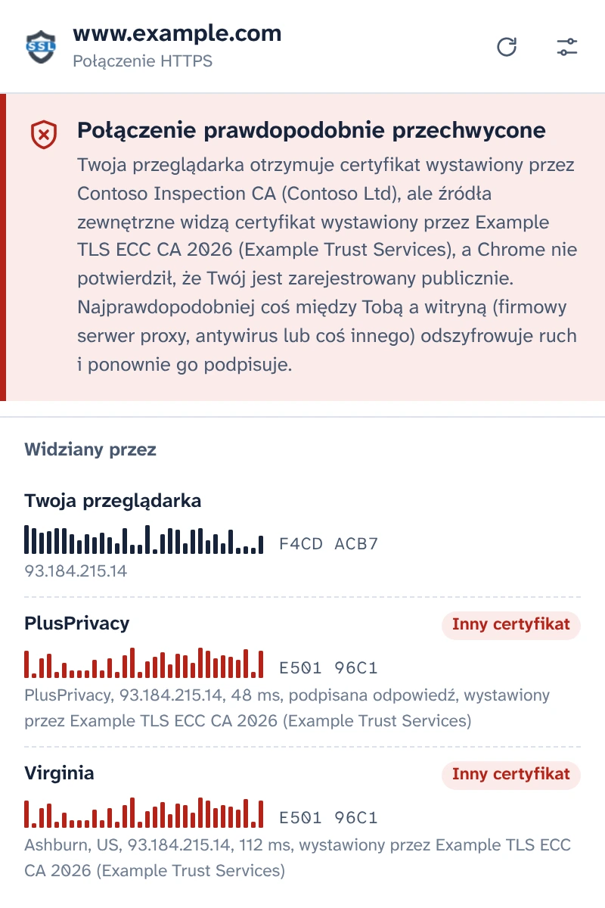
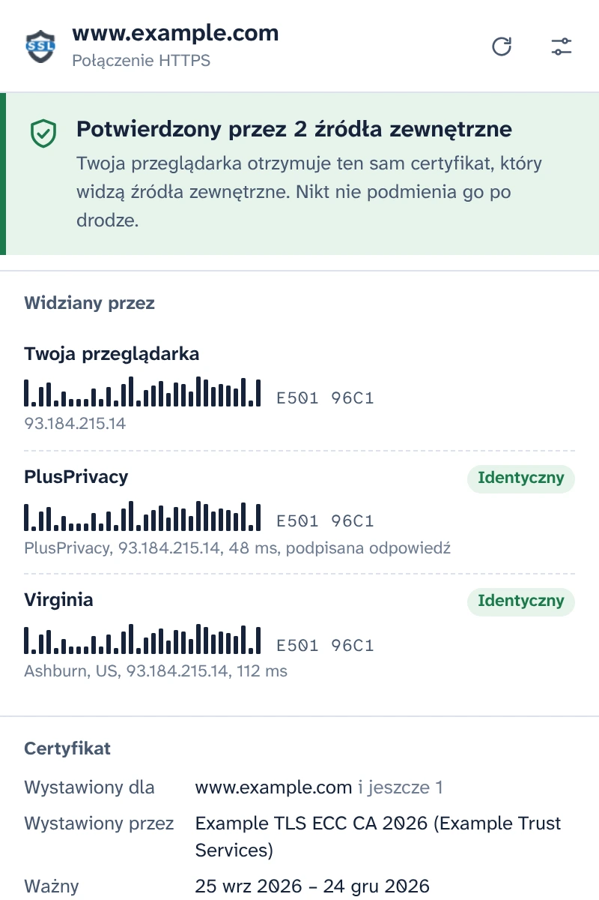
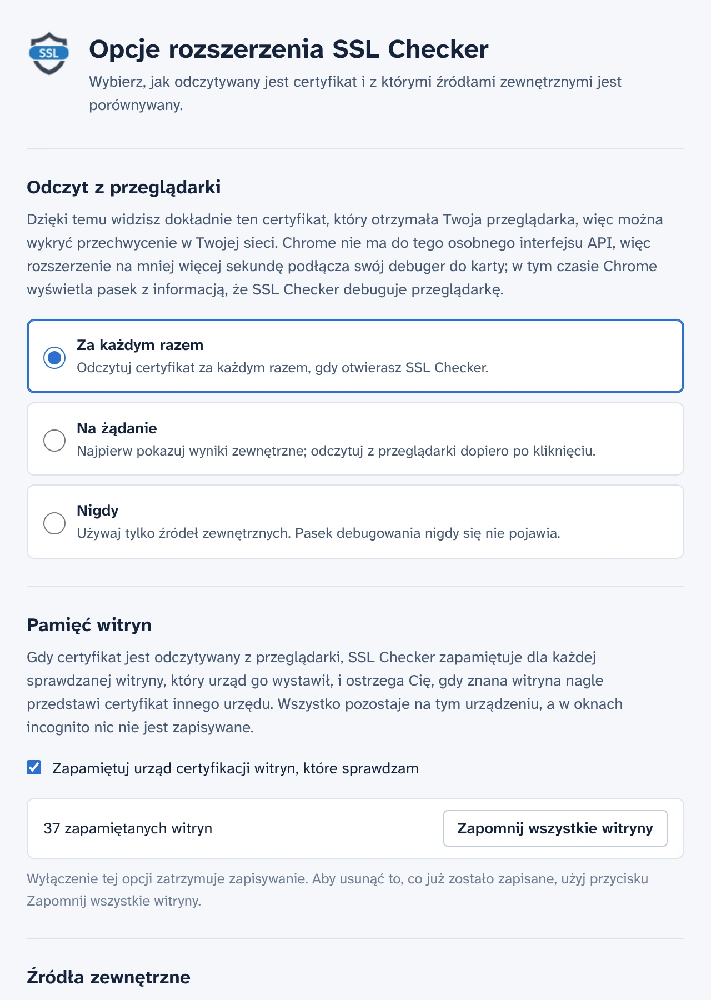

Zobacz certyfikat, który naprawdę otrzymała Twoja przeglądarka
SSL Checker odczytuje certyfikat witryny otwartej w Twojej karcie bezpośrednio z Chrome i porównuje go z tym, co widzą niezależni notariusze z innych miejsc w internecie. Jeśli się różnią, coś między Tobą a witryną podmienia certyfikat.
Bezpłatne i z otwartym kodem źródłowym. Bez konta, bez analityki.
Potwierdzony przez 2 źródła zewnętrznePołączenie prawdopodobnie przechwycone
Twoja przeglądarka otrzymuje ten sam certyfikat, który widzą źródła zewnętrzne. Nikt nie podmienia go po drodze.Twoja przeglądarka otrzymuje certyfikat wystawiony przez Contoso Inspection CA, ale źródła zewnętrzne widzą certyfikat wystawiony przez Example TLS ECC CA 2026.
- Twoja przeglądarka E501 96C1F4CD ACB7
- PlusPrivacy IdentycznyInny certyfikat E501 96C1
- Virginia IdentycznyInny certyfikat E501 96C1
Wszystkie szczegóły połączenia
To, co Chrome otrzymał dla tej karty, odczytane z samej przeglądarki, a nie pobrane ponownie z serwera.
- Nazwy objęte certyfikatem, wystawca, ważność i liczba pozostałych dni, poziom weryfikacji (DV, OV, EV)
- Wersja TLS, wymiana kluczy, w tym hybrydy postkwantowe, szyfr i Encrypted Client Hello
- Stan Certificate Transparency i podpisane znaczniki czasu certyfikatu
- Pełny łańcuch, odciski cyfrowe i wszystkie rozszerzenia. Skopiuj PEM lub pobierz łańcuch.

Wykryj przechwycenie HTTPS
Firmowe serwery proxy, skanowanie HTTPS w antywirusach i atakujący w publicznych sieciach Wi-Fi działają tak samo: odszyfrowują Twój ruch i podsuwają przeglądarce własny certyfikat. Strona wygląda normalnie, a kłódka nie znika.
SSL Checker pyta notariusza PlusPrivacy i każdego dodanego przez Ciebie notariusza, jaki certyfikat pokazuje im ta sama witryna. Notariusze łączą się z innych miejsc w internecie, z pominięciem tego, co działa w Twojej sieci, a odciski cyfrowe są porównywane:
- Wszędzie ten sam certyfikat: potwierdzony.
- Twój jest inny i niezarejestrowany publicznie: połączenie prawdopodobnie przechwycone. SSL Checker podaje urząd, który wystawił podmieniony certyfikat, i rozpoznaje znane produkty do inspekcji.
- Źródła są ze sobą niezgodne: zostaje to zgłoszone wraz z wyjaśnieniem, co może oznaczać każdy z przypadków.

Odpowiedzi, których nikt po drodze nie podrobi
Coś, co przechwytuje Twój ruch, mogłoby też próbować odpowiadać w imieniu notariusza. Nie uda mu się to: notariusz PlusPrivacy podpisuje każdą odpowiedź algorytmem Ed25519, a SSL Checker sprawdza podpis, losową liczbę wysyłaną z każdym zapytaniem i witrynę, o którą pytał. Sfałszowana, powtórzona lub przekierowana odpowiedź zostaje odrzucona, a okienko rozszerzenia informuje, że coś ją zmieniło.
Uruchom własnego notariusza
Notariusz ma otwarty kod źródłowy: to niewielka usługa Node.js dla Dockera, chroniona przed zalewem żądań i przed żądaniami do sieci prywatnych. Zainstaluj go na dowolnym serwerze, dodaj jego adres i klucz w Opcjach, a jego odpowiedzi będą sprawdzane w ten sam sposób.

Ty decydujesz, kiedy działa debuger
Chrome nie ma interfejsu API dla rozszerzeń, który podawałby certyfikat załadowanej strony, więc SSL Checker na około sekundę podłącza debuger Chrome do karty, aby go odczytać, a Chrome wyświetla w tym czasie pasek debugowania. W Opcjach wybierasz, kiedy to się dzieje:
- Za każdym razem, gdy otwierasz okienko rozszerzenia
- Na żądanie, jednym kliknięciem w okienku rozszerzenia
- Nigdy: pytani są tylko notariusze
Pamięta sprawdzane witryny
SSL Checker zapamiętuje, którego urzędu certyfikacji używa każda witryna, i ostrzega Cię, gdy znana witryna nagle przedstawi certyfikat innego urzędu, na przykład w nowej sieci Wi-Fi. Ta pamięć zostaje na Twoim urządzeniu, nigdy nie jest używana w oknach incognito i można ją wyłączyć lub wyczyścić w Opcjach.

Prywatność od podstaw
- Nic nie jest odczytywane ani wysyłane, dopóki nie wyrazisz zgody w okienku rozszerzenia.
- Twoje urządzenie opuszczają tylko nazwa hosta i port witryny, w treści żądania HTTPS do notariuszy, z których korzystasz.
- Notariusz PlusPrivacy nie prowadzi rejestru sprawdzanych witryn. Możesz go wyłączyć lub pytać tylko notariuszy uruchomionych przez Ciebie.
- Bez analityki, bez śledzenia, bez konta. Pamięć witryn nigdy nie opuszcza Twojego urządzenia.
- Ta witryna również nie korzysta z analityki i nie ładuje niczego z innych serwerów.
POST /v1/cert
Content-Type: application/json
{
"host": "www.example.com",
"port": 443,
"nonce": "Xq3MpTb0vR9kLs2eWn5yZA"
}